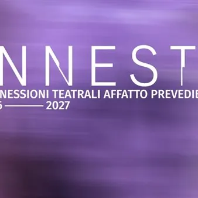

da dom 1 nov a gio 22 apr
Innesti - Connessioni teatrali affatto prevedibili
INNESTI Connessioni teatrali affatto prevedibili, Sala Bergamas, spettacoli ore 20.30. A pagamento
 Indicazioni
Indicazioni
- Costi e prenotazioni
- Costo non indicato · Prenotazione non indicata
- Programma
- Programma da verificare. Apri la fonte ufficiale per orari e possibili aggiornamenti.
- In caso di maltempo
- Nessuna indicazione specifica pubblicata.
- Note
- Acquisito automaticamente dalla fonte.
L’EVENTO
Descrizione completa
INNESTI Connessioni teatrali affatto prevedibili
Gradisca > Sala Bergamas > h 20.30
Biglietto Unico €8 > ridotto €5
Biglietteria online: https://www.bigliettoveloce.it/
01 > mercoledì 4, giovedì 5, venerdì 6 novembre 2026
UNA MADRE CORAGGIO – LA ERRANTE
di Michele Santeramo
regia Gianluca Barbadori
con Laura Marinoni
La “madre coraggio” di Brecht ispira una riflessione sul cinismo di oggi. Provocatoria, spietata, diretta. 02 > martedì 17, mercoledì 18, giovedì 19 novembre 2026
Arearea x Innesti
DOVE IL GIALLO SI SFOGLIA
Irene Ferrara/Angelica Margherita
SCILLA E CARIDDI
Michela Saggin/Marta Bevilacqua
Tre serate dedicate alla danza contemporanea e alla sperimentazione di nuovi linguaggi espressivi. 03 > mercoledì 9, giovedì 10, venerdì 11 dicembre 2026
PER SEMPRE
testi tratti da lettere e cartoline inedite di Giovanni Testori ad Alain Toubas
ideazione, drammaturgia e creazione Alessandro Bandini
con Alessandro Bandini
La struggente storia d’amore tra l’intellettuale Giovanni Testori e Alain Toubas prende vita sul palco. 04 > martedì 19, mercoledì 20 e giovedì 21 gennaio 2027
BÉBI. IL PRIMO AMORE
di Sándor Márai
regia e spazio Giacomo Pedini
con Andrea Bosca
Nel microcosmo routinario di un liceo, un crescendo di tensioni sottili e relazioni asimmetriche. 05 > mercoledì 3, giovedì 4 e venerdì 5 febbraio 2027
P COME PENELOPE
per una riscrittura contemporanea del mito
di e con Paola Fresa
La sposa di Ulisse è emblema dell’attesa. Ma cosa sappiamo di lei? Un’indagine ironica la svela. 06 > mercoledì 17, giovedì 18 e venerdì 19 febbraio 2027
SAL Ā M/SHALOM. DUE PADRI
dal romanzo Apeirogon di Colum McCann
adattamento Paola Fresa
uno spettacolo di e con Massimo Somaglino , Alessandro Lussiana
Due padri, uno israeliano e uno palestinese, uniti dal dolore, scelgono di diventare uomini di pace. 07 > mercoledì 10, giovedì 11 e venerdì 12 marzo 2027
HAPPY BIRTH + DAY
STELLE TERRESTRI
di Anna Zago
regia Nicoletta Robello
con Manuela Massimi, Anna Zago, Lia Zinno
In un tempo sospeso, tre donne evocano le ombre di Marilyn Monroe, Jacquelin e Kennedy e Maria Callas. 08 > mercoledì 31 marzo, giovedì 1 e venerdì 2 aprile 2027
MIA MAMMA FA IL NOTAIO, MA ANCHE IL RISOTTO
testi e musiche Filippo Capobianco
con Filippo Capobianco – campione mondiale di poetry slam 2023
Una favola di formazione che parla delle paure e dei desideri della Generazione Z. Unica guida, la poesia. 09 > martedì 20, mercoledì 21 e giovedì 22 aprile 2027
TIMER
regia e drammaturgia Marta Abate , Michelangelo Frola
con Linda Amicone , Simone Benelli , Sofia Pagano
Imprigionati dentro una comunicazione sempre più veloce e complessa. Tre ragazzi si raccontano. 10 > mercoledì 5, giovedì 6, venerdì 7 maggio 2027
OMBRELLONI
RIVIERA BLUES
di Iacopo Gardelli
con Lorenzo Carpinelli
musiche eseguite dal vivo di Giacomo Toschi
Gli stabilimenti balneari sono microcosmi dove osservare, con ironia, le illusioni e le ossessioni del nostro Paese.
IL PROGRAMMA
Programma e orari
Appuntamenti raccolti dalle fonti elencate. Dove manca un orario, non è ancora disponibile in questa scheda.
Programma pubblicato
- Dal 2026-11-01 al 2027-04-22
INFORMAZIONI UTILI
Prima di partire
- Controllare la fonte prima di partire.
ORGANIZZAZIONE